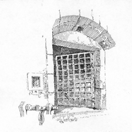
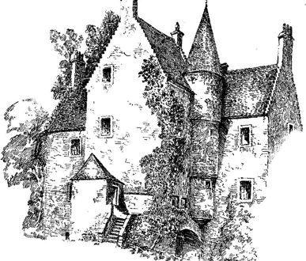
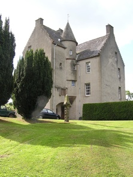

leckies of stirlingshire scotland



What you should know
King David Bruce gave Malcolm, the Earl of Lennox and son of Duncan the lands of Leckie in 1353 and 1357. They were the ancestors of the Leckies.
The Leckies of that ilk owned the Barony of Leckie from 1406 until 1668 when the lands were lost as a result of two main factors.
-
An early feud with the Grahams in the 1570’s and 1580’s and then a long and serious feud between the Leckies, Maxwells (of Newark) and Cunninghams on one side and the Maxwells (of Calderwoods) and Lindsays (of Dunrod) on the other over the ownership of land which resulted in the death of Alexander Leckie in 1601. Alexander’s death signalled the rising of the whole clan and battles continued over several years. This caused great financial loss to the family and the Leckie barony was mortgaged.
-
When heavy fines were imposed by the Crown for the Leckie’s support to the Scottish protestant movement, the Covenanters , the Leckies were broken and the lands of Leckie were transferred to their legal representative, David Moir who had strong links to the Jacobites.
This resulted in the dispersal of the Leckies. Some stayed in the area and others moved to Ireland and Canada.
The Rev Alexander Lecky recorded in his book ‘In the Days of the Laggan Presbytery’ the activities of the Laird of Lecky, a ‘Laggan gentleman’ in the 1630s or 40s, being hunted by agents of the established Church for his dissenting religious beliefs. Alexander took refuge in Ireland but died in 1643, on a visit back to Leckie in Scotland or it may have been his son John who lost the Leckie estates in 1668 but who continued to hold the courtesy title and who actively supported the Covenanters who took refuge in Donegal as well.
Donegal records are extremely poor and it is impossible to trace the Leckie’s exact connection to Donegal.
Visit to ‘Old Leckie’.

‘Old Leckie’, Gargunnock, Stirling, Scotland 2008
leckie
The origins of the name are the Gallic words “leac” a flagstone and “leacach” a sloping hillside, which aptly describes the property of Leckie which is on the north flank of the Lennox Range. (Leckey, John. 1986.)
This gate was built on Leckie Castle to keep the Grahams out during the feud in the 1570s & it is still there.